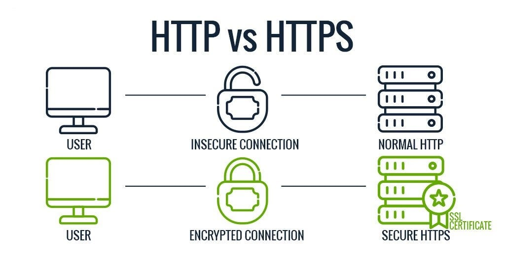

HTTP & HTTPS

What is HTTP?
HyperText Transfer Protocol. The set of rules that controls how data is requested and sent between a browser and a web server.
What is HTTPS?
HyperText Transfer Protocol Secure. The encrypted version of HTTP. It keeps data private and secure between the browser and server.
How HTTP Works
- Your browser sends a request to a web server.
- The server sends back a response — usually an HTML page.
- This request-response cycle happens every time you load a page.
- HTTP runs on top of TCP/IP.
HTTP vs. HTTPS
- HTTP - Data is sent in plain text. Anyone can intercept and read it.
- HTTPS - Data is encrypted using SSL/TLS. Safe from interception.
- HTTPS shows a padlock icon in the browser address bar.
- All modern websites should use HTTPS.
Key Facts
- HTTP was created by Tim Berners-Lee in 1989.
- HTTPS became the standard after growing privacy concerns in the 2010s.
- Over 95% of web traffic is now encrypted via HTTPS.
Common HTTP Response Codes
- 200 - OK. Page loaded successfully.
- 301 - Page has moved permanently to a new URL.
- 404 - Page not found.
- 500 - Server error.